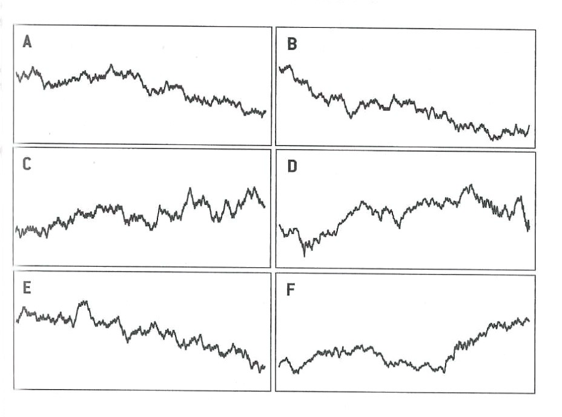

4 Data Science—CT + QT
Quotes
It would be nice if we could just plug data into a statistical model,
crunch the numbers, and take for granted that it was a good
representation of the real world.
4.1 Introduction
Computational thinking is a problem-solving methodology that breaks down complex problems in manageable parts, finds relationships and patterns among the parts, and delivers solutions as repeatable steps—as algorithms. Quantitative thinking is a problem-solving technique that represents things in measurable quantities, enabling us to manipulate concepts mathematically. Quantitative thinking turns concepts into data.
CT and QT are used in many disciplines, CT is not just for computer scientists and quantification is not the concern of only mathematicians or statisticians. The two methodologies fit together like hand in glove in the modern discipline of data science.
The origins of data science trace back to statistics, the study of information in the presence of uncertainty, computer science, and mathematics. Drawing on these foundational disciplines, data science aims at solving real-world problems using data.
Definition: Data Science
At the intersection of the foundation disciplines statistics, mathematics, and computer science, performing data science means drawing conclusions from data about real-world problems using computation and automation in the presence of uncertainty.
The solutions produced by data science involve reports, dashboards, visualizations, algorithms and software. Of particular importance in data science application is using statistical and machine learning techniques to train algorithms on data sets to find patterns and relationships and to generalize these patterns into prediction machines. This effort is referred to as modeling in data science and the algorithms themselves are the data science models.
You recognize in this description of data science the elements of computational and quantitative thinking: data, patterns and relationships, generalization, algorithm development.
A data science investigation starts with a problem: a business, policy, or research question:
- A retail company might wonder whether there is a difference between customers visiting its bricks-and-mortar stores and online shoppers.
- A technical support provider might be interested to determine the drivers behind response/non-response to surveys after tickets have been resolved.
- A city wants to make personalized recommendations to residents on how to reduce water consumption.
- A marketing team is looking for ways to automate the creation of product descriptions.
- A panel at the Food and Drug Administration (FDA) examines whether a new drug shows significantly more side effects than a currently available drug.
- The operator of a grocery store is wondering whether revenue can be increased by placing certain items closer together on shelves.
- A trucking company wants to move from scheduled maintenance of its fleet to predictive maintenance by equipping trucks with sensors that inform the company when a vehicle requires maintenance or fixing.
The real-world problem is translated by the data scientist into one or more analytical categories:
| Category | Question asked |
|---|---|
| Description | What is and what has been? |
| Prediction | What will be? |
| Classification | What category does this item belong to? |
| Hypothesis Testing | What can I say about X? |
| Prescription | What should I do? |
| Clustering | Which things are similar? |
| Association | Which things occur together? |
| Optimization | What is the best way to do something? |
| Generation | What novel content is there? |
The question before the FDA falls in the hypothesis testing category. Based on the data from a clinical trial, can we reject the hypothesis that the new and current drug have the same level of side effects? Answering the question of the retail company involves a combination of description, clustering, and hypothesis testing. The technical support provider will employ a predictive model that links attributes of the support tickets and the customer to the likelihood of response to the survey request. The marketing team might be looking toward a generative AI solutions to produce text descriptions from images of products. The city uses clustering to segment residents into groups that are similar with respect to water usage profiles and develops a separate recommendation model for each group. The grocery store uses association analysis of past purchase records to determine which items are likely to be purchased together. The trucking company uses a combination of predictive models that forecast the likelihood of parts failing and optimization to get a truck to a repair shop with minimal disruption of the route.
A fundamental aspect of these investigation is the development of a data science model that draws on the essential patterns and relationships in the data to describe, predict, classify, test, recommend, cluster, associate, optimize, and generate.
4.2 Data Science Models
From the 30,000 foot view a model is simply a mechanism to process some input and produce a corresponding output (Figure 4.1).
The input to drive the model algorithm is almost always some form of data. The algorithm that processes the inputs can be based on data, but that is not necessarily so. Suppose the problem we are trying to solve is to assess someone’s annual federal income tax. The problem is solved with a model that takes as input the individuals financial situation. This information is typically known without error as information about income, property taxes, expenses, etc. is well documented. The algorithm processing this input is a translation of the relevant information in the federal income tax laws into machine instructions. The output is the amount of money owed to the government or expected as a refund.
Now suppose that for some reason the input data in the tax problem is not known without error. For example, income from tips, medical expenses or charitable contributions might be best guesses rather than exact amounts. Income data could be noisy because foreign income is converted at fluctuating exchange rates. If the input data is the realization of stochastic (random) influences, should we modify the algorithm?
When the input data to an algorithm is the result of observing random variation, we are looking to the algorithm of the model to find the signal in the data and to separate it from the noise. The signal located in the data is then transformed into the model output. Most models built in data science are of this kind because data is inherently noisy. The reasons for the random variations are many: selecting observation from a larger population at random, applying treatments to randomly chosen experimental units, variations in measurement instruments and procedures, variations in the environment in which a phenomenon is observed, and so on. The specific algorithms data scientists use depend on the analysis category, properties of the data, assumptions one is willing to make, attributes we look for in competitive models, and personal preferences.
Signal and Noise
The signal represents the systematic, non-random effects in the data. Data scientists and statisticians define the noise as the unpredictable randomness around the signal. A slightly different, and also useful, definition of noise stems from intelligence analysis. The signal is the information we are trying to find, the noise is the cacophony of other information that obscures the signal. That information might well be a signal for something else but it is irrelevant or useless for the event the intelligence analyst is trying to predict.
Information not being relevant for the signal we are trying to find is the key. In the view of the data scientist, that information is due to random events.
Finding the signal is not trivial, different analysts can arrive at different models to capture it. Signals can be obscured by noise. What appears to be a signal might just be random noise that we mistake for a systematic effect.
Example: Theophylline Concentration
Figure 4.2 shows the concentration of the drug theophylline over 24 hours after administration of the drug in two groups of patients. There are 98 data points of theophylline concentration and measurement time. What are the signals in the data? What is noise?
The first observation is that the data points are not all the same over time, otherwise they would fall on a horizontal straight line: there is variability in the data. Separating signal and noise means attributing this variability to different sources: some systematic, some random.
Focusing on either the open circles (group 1) or the triangles (group 2), you notice that points that are close in time are not necessarily close in the concentration measurement. Not all patients were measured at exactly the same time points, but at very similar time points. For example, concentrations were measured after about 7, 9, and 12 hours. The differences in the concentration measurements among the patients receiving the same dosage might be due to patient-to-patient variability or measurement error.
Focusing on the general patterns of open circles and triangles, it seems that the triangles appear on average below the average circle a few hours after administration. Absorption and elimination of theophylline appears to behave differently in the two groups.
Much of the variability in the data seems to be a function of time. Shortly after administering the drug the concentration rises, reaches a maximum level and then declines as the drug is eliminated from the body. Note that this sentence describes a general overall trend in the data here.
Which of these sources of variability are systematic—the signals in the data— and which are random noise?
Patient-to-patient variability within a group at the same time of measurement: we attribute this to random differences among the participants.
Possible measurement errors in determining the concentrations: random noise
Overall trend of drug concentration over time: signal
Differences among the groups: signal
These assignments to signal and noise can be argued. For example, we might want to test the very hypothesis that there are no group-to-group differences. If that hypothesis is true, any differences between the groups we discern in Figure 4.2 would be due to chance; random noise in other words.
The variability between patients could be due to factors such as age, gender, medical condition, etc. We do not have any data about these attributes. By treating these influences as noise, we are making important assumptions that their effects are irrelevant for conclusions derived from the data. Suppose that the groups refer to smokers and non-smokers but also that group 1 consists of mostly men and group 2 consists of mostly women. If we find differences in theophylline concentration over time among the groups, we could not attribute those to either smoking status or gender.
Finding the signal in noisy data is not trivial. The opposite can also be difficult: not mistaking noise for a signal. Figure 4.3 is taken from Silver (2012, 341) and displays six “trends”. Four of them are simple random walks, the result of pure randomness. Two panels show the movement of the Dow Jones Industrial Average (DJIA) during the first 1,000 trading days of the 1970s and 1980s. Which of the panels are showing the DJIA and which are random noise?

What do we learn from this?
Even purely random data can appear non-random over shorter sequences. We can easily fall into the trap of seeing a pattern (a signal) where there is none. Sometimes there is no signal at all. After drawing two unlikely poker hands in a row there is not a greater chance of a third unlikely hand unless there is some systematic effect (cards not properly shuffled, game rigged). Our brains ignore that fact and believe that we are more lucky than is expected by chance.
Data that contains clear long-run signals—the stock market value is increasing over time—can appear quite random on shorter sequences. One a day to day basis predicting whether the market goes up or down is very difficult. In the long run ups and downs are almost equally likely. Upswings have a slight upper hand and on average are greater than the downswings, increasing the overall value in the long term. Traders who try to beat the market over the short run have their work cut out for them.
By the way, panels D and F in Figure 4.3 are from actual stock market data. Panels A, B, C, and E are pure random walks. It would not be surprising if investors would bet money on “trend” C.
Exercise: Southern Oscillation Index (SOI)
The Southern Oscillation Index (SOI) is a standardized index based on the observed sea level pressure differences between Tahiti and Darwin, Australia. The SOI is one measure of the large-scale fluctuations in air pressure occurring between the western and eastern tropical Pacific (i.e., the state of the Southern Oscillation) during El Niño and La Niña episodes.
In general, smoothed time series of the SOI correlate highly with changes in ocean temperatures across the eastern tropical Pacific. The negative phase of the SOI represents below-normal air pressure at Tahiti and above-normal air pressure at Darwin. Prolonged periods of negative (positive) SOI values coincide with abnormally warm (cold) ocean waters across the eastern tropical Pacific typical of El Niño (La Niña) episodes (Figure 4.4).
According to Wikipedia, there have been about 30 El Niño episodes since 1950 with strong El Niño events in 1982–83, 1997–98, and 2014–16. You recognize El Niño when the SOI dips negative for a period of time. La Niña is marked by periods of positive SOI values.
- What is the signal and the noise in these data?
- Is it possible that there are multiple signals in these data, associated with different time horizons?
Choosing a Model
Selecting the right type of model is a critical step in any data science project. There are many choices based on input data, learning methodology and analysis category. Figure 4.5 is an attempt at structuring the input, algorithm, and output components of a model in the data science context. The diagram is complex and yet woefully incomplete and is intended to give you an idea of the diversity of methods and the many ways we can look at things. For example, in discussing input data we could highlight how data are stored, how fast it is moving, the degree to which the data is structured, the data types, and so forth. There are many other categorizations of data one could have listed.
The categorization of algorithms leaves out some approaches to learning from data to keep things (relatively) simple. Volumes of books and papers have been written about every item in the list of algorithms and many algorithms are represented by a single entry. Multi-layer networks, for example, include artificial neural networks, deep networks such as convolutional and recurrent networks, and transformer architectures such as GPT.
{kind=link}
Supervised Learning
Arguably the most important class of algorithms learning from data is supervised learning. The name originates in thinking of learning in an environment that is supervised by a teacher. The teacher asks questions for which they know the correct answer (the ground truth) and judge a student’s response to the questions. The goal is to increase students’ knowledge as measured by the quality of their answers. But we do not want students to just memorize answers, we want to teach them to be problem solvers, to apply the knowledge to new problems, to generalize.
Supervised learning is characterized by the presence of a target variable, also called a dependent variable, response variable, or output variable. This is the attribute about which we wish to draw conclusions. For example, to predict the probability that someone contacting customer support will later fill out a survey, the target variable is whether they responded to the survey request or not. To model the strength of drywall a target variable might be the force required to pull a nail from the board.
Other variables in our data set, beside the target variable, are potentially input variables to our model. In modeling the nail pull strength of drywall input variables might be the thickness of the board, the moisture, the chemistry of the gypsum, characteristics of the manufacturing environment, and so forth.
The values of the target variable are also called the labels in machine learning. This name stems from image analysis where prior to training an algorithm human interpreters go through the images in the training data and label them (Figure 4.6).
This process establishes the ground truth, the correct answer which the algorithm associates with the other variables in the data during training. Because the algorithm makes the connection between input variables and target variable at this stage, we can later apply the trained algorithm to new observations for which the label (the true value) is unknown.
Supervised learning can have many goals. For example:
- Predict the target variable from input variables.
- Develop a function that approximates the underlying relationship between inputs and outputs.
- Understand the relationship between inputs and outputs.
- Classify observations into categories of the target variable based on the input variables.
- Group the observations into sets of similar data based on the values of the target variable and based on values of the inputs.
- Reduce the dimensionality of the problem by transforming target and inputs from a high-dimensional to a lower-dimensional space.
- Test hypotheses about the target variable.
Data science projects can have multiple of these goals. For example, you might be interested in understanding the relationship between target and input variables and use that relationship for predictions.
To close the loop, we can now map a teacher teaching a classroom of students to the problem of building a machine learning model through supervised learning.
- The problems asked by the teacher, the learning algorithm, are the data points.
- The values of the target variable are the the correct answers.
- The input variables represent the information used by the students to answer the questions.
Regression and classification
Within the supervised learning category regression and classification models are the most important model types.
In a regression context we are interested in the relationship between the mean of a target variable and the inputs. The goal is to make predictions about the mean of the target variable when the input variables take on certain values.
In a classification context the target variable is categorical (see Section 2.4), for example, makes of cars, names of fruit, object categories on images, or the 10,000 words in a dictionary. Based on the values of input variables we wish to classify a new observation into one of the possible categories. For example, we measure health attributes such as LDL, weight, age, etc. along with the target variable, whether someone is at low, medium, or high risk of developing coronary heart disease. The process of training the model involves data from people with confirmed low, medium, and high risk of heart disease. Based on the classification model so developed, a physician can classify a new patient as low, medium, or high risk based on information about their LDL, weight, age, etc.
The term prediction is common to describe the outcome of applying a regression model or a classification model. In the former case we make a prediction of a numeric attribute. In the latter we predict which of the possible categories an observation belongs to.
The process of prediction is fundamental to both types of applications. Consider you are presented with a handwritten digit and you have trained a classification model in digit detection. The algorithm does not actually say which of the ten digits it was presented with. The algorithm computes a vector of 10 quantities each between 0 and 1, and subject to the constraint that they sum to 1.
Here is the vector for one observation \[ [0.00000, 0.00001, 0.00001, 0.00003, 0.00000, 0.00000, 0.00000, 0.99994, 0.00000, 0.00001] \]
and here is the vector for another observation
\[ [0.00056, 0.00002, 0.00000, 0.00001, 0.00424, 0.18760, 0.74695, 0.00001, 0.00616, 0.05446] \]
The first element of the vector corresponds to digit 0, the second to digit 1, and so on. Considering the first vector, how would you convert the numbers into a classification? Since the numbers are between 0 and 1, and sum to 1, it is tempting to interpret them as probabilities. The overwhelming evidence points at the 8th position in the vector with a large probability of 0.99994. The algorithm is almost certain that the digit is a “7”.
In the second case we see more of a spread in the probabilities. Digit “5” is considered quite likely (probability 0.1876). Digit “6” has the highest probability (0.74695) and “9” also has a non-zero probability (0.05446). The rule that classifies an observation into the category with the highest probability would assign the label “6” to the second observation.

Figure 4.7 shows the actual and classified digits for nine data points. The vectors shown above correspond to the probabilities for the images in the upper left and lower right corners. We are not surprised that the algorithm classified the first observation as a “7”. We are also not surprised that the sloppy “5” in the lower right corner was mistaken for a “6” (which had the second largest probability).
The point of this example is twofold:
The process of classifying something through a statistical algorithm often goes first through a process of predicting a measure of confidence or likelihood associated with the possible outcomes. We then classify the observation into the category that has the highest probability. This is known as the Bayes Rule of classification and it can be shown to be optimal in the sense of achieving the greatest accuracy.
When making predictions we need to think in terms of probabilities and uncertainties. Ultimately, the classification model will spit out one category and we interpret this as “the model says the digit is a 7”. In the case of the first observation, there is not much uncertainty in the prediction, as the model deems other choices very unlikely. In the second case we should appreciate that the algorithm decided on a “5”, but also that there is uncertainty in the prediction. We only know that the algorithm got it right because we know the author of the digit was writing a “5” (the label). The algorithm will get a certain proportion of cases wrong, this is known as the mis-classification rate. As Silver (2012) puts it,
Our brains, wired to detect patterns, are always looking for a signal,
when instead we should appreciate how noisy the data is.
Predictions as surrogates
In Section 2.6 we introduced the concept of a surrogate or proxy variable that takes the place of another variable that is difficult to measure.
The predictions of a model can be viewed as surrogates for the attribute that is being modeled. If you build a model for the age of abalone molluscs based on characteristics such as the size, weight, and gender of the animal, then you can apply the model when you find a new abalone. Based on its siz. weight, and gender you can then predict its age. The predicted value is the surrogate for the unobserved attribute age.
This notion of predictions as surrogates for unobserved values is important for attributes that are difficult or expensive to observe or when the method of observation is destructive. Here are examples of prediction of a difficult to measure attribute and of a destructive attribute.
Example: Measuring Fitness
One method of quantifying the aerobic fitness of athletes is through testing their aerobic capacity under stress (Figure 4.8). These measurements are time consuming and expensive.

Imagine that you conduct a study in which a number of athletes are subjected to aerobic capacity tests on a machine similar to that shown in Figure 4.8. In addition to measuring their aerobic capacity, you also measure simple-to-obtain attributes such as heart rate, rest pulse, run pulse, distance run, etc.
Next you develop a model that can predict aerobic capacity from the easy-to-measure attributes. If that model works well, you can predict the aerobic capacity of an athlete by obtaining their heart rate, pulse, rest pulse, etc. The prediction from that model is a surrogate for the unobserved aerobic fitness measurement.
This is an example of a regression model.
We incur the expense of measuring the difficult attribute (aerobic fitness) for the study participants only. The model derived from that data can be applied to athletes who did not participate in the study. The prediction from the model provides a quick-and-cheap surrogate value in lieu of going through the trouble of putting every athlete through a fitness stress testing procedure.
Example: Nail Pull Test
The force required to pull a nail out of a gypsum board (dry wall) is a measure of the board quality. Unfortunately, the test is destructive and the tested board cannot be used. To circumvent the problem and have more boards to sell, a regression model can be built to predict the nail pull strength from other attributes such as the dry wall material, the thickness of the wall, the method of construction, humidity, temperature, etc. The attributes and the nail pull strength are determined for a random sample of boards. The predictions of the regression model can be applied to other boards.
These attributes are easy to measure and non-destructive. When the regression model works well—that is, it explains a sufficient degree of variation in nail pull strengths across gypsum boards—the prediction from the model can be used as surrogate for the actual board nail pull strength without destroying the board.
Generalization
Our teacher has the noble goal of not just drilling the correct answers but to turn the students into problem solvers who can apply concepts to solve new questions. What is the parallel of this concept in supervised machine learning?
Suppose we can quantify the quality of a student’s answer, for example by using a metric that increases the further their answer is of the mark. When an answer is correct, the metric returns 0. When should the teacher stop teaching? When all the students can answer all the questions correctly? At this point our metric across the training questions would be zero. The teacher has done a good job training students on that set of questions, but have they learned to solve new, previously unseen, problems?
We need to throw in some new problems and measure how well the students do on those. Getting great answers (small discrepancy metric) on new questions shows that the students can apply the learned concepts to new problems. They are able to generalize. Recall from Chapter 1 that generalization is one of the steps in computational thinking, just prior to algorithm design. In data science, the process of training a model leads to an algorithm that can perform the analytic goal. The way in which the model is trained ensures that the algorithm generalizes well to new observations, those not in the training data.
Just like the teacher is not interested in drilling the correct answers to the questions in the lesson plan, we are not interested in building models that follow the training data too closely. Models that suffer from that problem are overfitting the data and do not generalize well. They treat too much of the noise as a worthwhile signal.
Example: Melanoma Incidences
The data displayed in Figure 4.9 are from the Connecticut Tumor Registry and represent age-adjusted numbers of melanoma incidences per 100,000 people for the 37 years from 1936 to 1972 (Houghton, Flannery, and Viola 1980).
There is noise and signal in the data. While the data points do not fall on a perfect trend line, there is a general upward trend in the number of melanoma incidences per 100,000 over the 37-year period. There is also a shorter-term oscillation around the overall trend.
Figure 4.10 shows the data and four possible models to capture the signal in the data. The solid black line tries to capture the overall trend. While this model might be OK to describe the trend over 30+ years, it is underfit with respect to the shorter oscillations of the incidence rate. The dotted (red), dashed (blue), and dot-dashed (dark green) lines try to capture these shorter-term signals in the data. The green line appears overfit, it follows the observed data too closely, almost interpolating the dots. The other two lines fall somewhere between the two extreme models.
Determining the appropriate amount of signal extraction, balancing overfitting and underfitting, is an important aspect of all data science modeling projects. An underfit model does not generalize well because it is too simple. An overfit model does not generalize well because it is too sensitive to unseen observations. Striking the balance between over- and under-fit is also known as the bias-variance tradeoff in data science.
All Models are wrong
George E.P. Box is credited with coining the much-used phrase “all models are wrong, but some are useful”. The phrase appears partially (“all models are wrong”) twice in his 1976 paper on Science and Statistics (Box 1976):
Since all models are wrong the scientist cannot obtain a “correct” one by excessive elaboration.
Since all models are wrong the scientist must be alert to what is importantly wrong.
The full phrase appears on p. 424 of his book with Norman Draper (Box and Draper 1987).
The first G.E.P. Box quote instructs us not to overdo it in building models; this translates to the problem of overfitting, crafting a model that follows the training data too closely and as a result does not generalize well to new data points. If the goal is to predict, classify, or cluster the unseen; generalizability of the model is key. A model to forecast stock prices or trading volumes is judged by how well it can predict the future, not by how well it can predict the past. The adequate level of generalization for that model must be wrung from current and past stock prices.
The second G.E.P. Box quote instructs us that models are abstracting away features of the phenomenon. If these are important features, the model is not useful. In the best case this model does not meet its goal and is revised or abandoned. In the worst case the model leads to bad decisions and harmful outcomes.
The important lesson is that any model is an abstraction of a phenomenon and we strive to find a useful abstraction. The model does not attempt to reproduce the phenomenon. The tax algorithm converts the essence of the tax code into machine instructions, it is not an electronic copy of the entire law. The purpose is to accurately calculate an entity’s tax, anything else can be stripped away. An algorithm processing noisy data that reproduces the data is uninteresting. The goal is to abstract the data in such a way to allow separating the signal from the noise and to convert the signal into the desired output.
The assumptions we make in building models are very important. Violations of the assumptions can lead to biased conclusions when the model does not represent the phenomenon it is supposed to abstract.
Assignment: Compartmental Models in Epidemiology
The SIR (Susceptible–Infectious–Recovered) model is a standard class of compartmental models in epidemiology, describing how an infectious disease moves through a population. On the surface this makes sense: at each point in time an individual is in one of three states, called compartments:
- You have not had the disease but you are susceptible to it (S compartment)
- You are infected by the disease (I compartment)
- You are recovered from the disease, or dead (R compartment)
A vaccination, then, is a shortcut that moves an individual directly from the S to the R compartment, bypassing the infected state.
However, there are a number of assumptions in the SIR model that can invalidate the model for some diseases and circumstances:
- The disease progresses in only one direction, from S to I to R.
- Everyone is equally susceptible and behaves the same way.
- Everyone is equally likely to be vaccinated, if a vaccine is available.
- All members of the populations intermingle at random.
The rate at which the disease spreads through the population is measured by the basic reproduction number, \(R_0\). This number, which we became all too familiar with during the COVID-19 pandemic, measures the number of uninfected people expected to catch the disease from an infected individual. An \(R_0\) of 3 means that someone who contracts the disease is expected to pass it on to three other individuals. In the absence of vaccines or quarantines, any disease with \(R_0 > 1\) will eventually spread to the entire population.
Discuss whether the assumptions of the SIR model apply to the COVID-19 pandemic.
What could be reasons why epidemiologists hold on to a SIR model even if one or more of its assumptions are violated?
In some countries COVID intervention measures were directly related to \(R_0\), often called the R-number. If a three-day average of \(R_0\) was above a certain threshold more stringent COVID restrictions took effect. If the three-day average \(R_0\) dropped below a threshold restrictions were relaxed. \(R_0\) is calculated either retrospectively from epidemiological data (such as data from contact tracing) or using theoretical mathematical models based on differential equations such as the SIR model. Discuss the pros and cons of the two approaches.
Is \(R_0\) a biological constant of a pathogen, or is it a function of human behavior and characteristics of the pathogen?
Models that explicitly incorporate uncertainty are called stochastic models and play an important role in analyzing data. Partly because data are inherently variable and noisy. Partly because describing something in stochastic terms—letting random elements account for some of the variability we see—enables us to model highly complex phenomena in relatively simple terms. The example of modeling coin flips will make the concept clearer.
Exercise: Modeling Coin Flips
Suppose we want to predict whether a coin, when flipped, lands on Heads or Tails. We can try and develop a mathematical model that captures the forces acting on the coin: its starting position, the angle and momentum when it is released, conditions of the environment such as wind and temperature (does that matter?), conditions of the landing surface (angle, softness, etc.), conditions of the coin (surface, weight, material, shape, damage, etc.) and so on and so on. It will turn into a very complicated model with many sub-models. We will have to make assumptions, for example, that wind speed and direction are constant, that the coin is perfectly round and flat.
We end up with a very complex model, full of individual abstractions. Whether we will be able to perfectly predict whether the coin lands on Heads or Tails depends on whether we model the sub-processes correctly, whether we combine them correctly into an overall model, and whether the assumptions are met.
A much simpler model would be to not try and predict any particular flip of the coin and to acknowledge that the forces that determine how a coin lands are essentially random (stochastic). The stochastic model for the coin flip is extremely simple. Every flip is assumed to be the realization of a random experiment with two possible outcomes: Heads and Tails. Our model rules out that the coin lands on each side. If the coin lands at an angle we call the side that faces up. The only parameter of the random experiment is the probability that the coin lands on Heads (or Tails). If the coin is fair and is properly tossed, that probability should be 0.5.
We can even run an experiment with a particular coin and flip it 100 times to get an estimate of the parameter. If it lands on Heads 45 times out of 100 tosses, then the probability of Heads is 0.45.
Unsupervised Learning
Unsupervised learning does not utilize a target variable; hence it cannot predict or classify observations. However, we are still interested in discovering structure, patterns, and relationships in the data.
The term unsupervised refers to the fact that we no longer know the ground truth because there is no target variable. Hence the concept of a teacher who knows the correct answers and supervises the learning progress of the student does not apply. In unsupervised learning there are no clear error metrics by which to judge the quality of an analysis, which explains the proliferation of unsupervised methods and the reliance on heuristics. For example, a 5-means cluster analysis will find five groups of observations in the data, whether this is the correct number or not, and it is up to us to interpret what differentiates the groups and to assign group labels.
Often, unsupervised learning is used in an exploratory fashion, improving our understanding of the joint distributional properties of the data and the relationships in the data. The findings then help lead us toward supervised approaches.
A coarse categorization of unsupervised learning techniques also hints at their application:
Association analysis: which values of the variables tend to occur together in the data? An application is market basket analysis, where the data represent items in a shopping cart (or a basket in the market). If items frequently appear together, bread and butter, or beer and chips, for example, then maybe they should be located close together in the store. Association analysis is also useful to build recommender systems: shoppers who bought this item also bought the following items \(\ldots\)
Cluster analysis: can variables be used to grouped data into sets such that the observations within a set are more similar to each other than they are to observations in other sets? An application of clustering is the grouping of customers into segments. Segmentation analysis is behind loyalty programs, lower APRs for customers with good credit rating, and churn models.
Dimension reduction: can we transform the input variables into a smaller set of data without losing relevant information? Applications of dimension reduction are in high-dimensional problems where the number of inputs is large relative to the number of observations. In problems with wide data, the number of inputs \(p\) can be much larger than the number of observations, which eliminates many traditional methods of analysis from consideration.